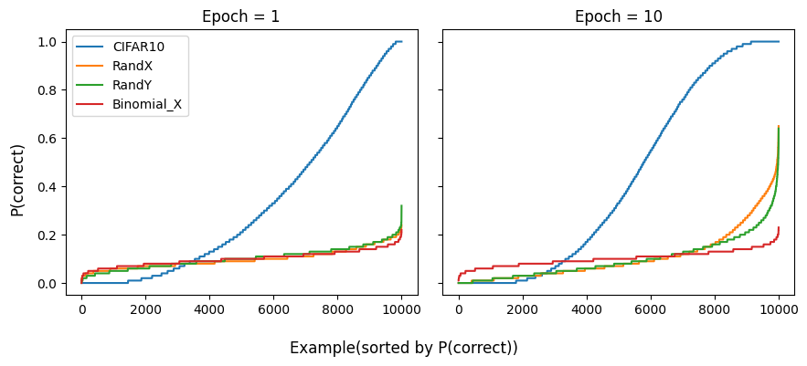

class RandX(Dataset):
"""Injects example noise into dataset by replacing x% of inputs with random gaussian N(0, 1) noise"""
def __init__(self, dataset, x = 1.0):
self.dataset = dataset
self.x = x
self.modified = {}
for idx, (img, _) in enumerate(self.dataset):
if np.random.rand() <= x:
self.modified[idx] = torch.randn_like(img)
torch.save(self.modified, os.path.join(dataset.root, 'randX_modified'))
def __len__(self): return len(self.dataset)
def __getitem__(self, idx):
X, y = self.dataset[idx]
return self.modified.get(idx, X), y
class RandY(Dataset):
"""Injects example noise into dataset by replacing y% of labels with random labels"""
def __init__(self, dataset, y = 1.0):
self.dataset = dataset
self.y = y
self.modified = {}
for idx in range(len(self.dataset)):
if np.random.rand() <= y:
self.modified[idx] = np.random.randint(0, len(self.dataset.classes))
torch.save(self.modified, os.path.join(dataset.root, 'randY_modified'))
def __len__(self): return len(self.dataset)
def __getitem__(self, idx):
X, y = self.dataset[idx]
return X, self.modified.get(idx, y)A Closer Look at Memorization in Deep Networks
An attempted (partial) paper reproduction
deep learning
paper
This paper argues that memorization is a behavior exhibited by networks trained on random data, as, in the absence of patterns, they can only rely on remembering examples. The authors investigate this phenomenon and make three key claims:
- Networks do not exclusively memorize data.
- Networks initially learn simple patterns before resorting to memorization.
- Regularization prevents memorization and promotes generalization.
Here we aim to reproduce Figures 1, 7, and 8 from the paper.
Fig 1
To support the first claim, the authors argue if networks simply memorize inputs they perform equally when on different training examples. However, if networks learn patterns, there should be points that are easy to learn because they fit these patterns better than others. To see if this is the case they train an MLP for a single epoch starting from 100 different initializations and data shufflings and log the percentage of times an example was correctly classified.
The experiment is performed with the CIFAR10 dataset, a noisy input version RandX, and a noisy label version RandY. We first define dataset wrappers to implement the noisy variants. Note that for epoch-to-epoch consistency we determine which examples to corrupt at initialization.
Now we define a standard training loop, initialization functions, and the MLP specified in the paper.
def train(model, train, val, optimizer, criterion = nn.CrossEntropyLoss(), epochs = 100, batch_size = 256, save_path = 'models/tmp'):
model.to(device)
train = DataLoader(train, batch_size = batch_size, shuffle = True)
val = DataLoader(val, batch_size = batch_size, shuffle = False)
best_loss = np.inf
for epoch in range(epochs):
model.train()
for images, labels in train:
images, labels = images.to(device), labels.to(device)
optimizer.zero_grad()
loss = criterion(model(images), labels)
loss.backward()
optimizer.step()
val_loss, val_acc = eval_model(model, val)
if val_loss < best_loss:
best_loss = val_loss
torch.save(model.state_dict(), save_path)
print(f'Epoch {epoch + 1}/{epochs}, Loss: {val_loss:.4f}, Accuracy: {val_acc:.4f}')
def _init_weights(m):
if 'Linear' in str(type(m)):
nn.init.xavier_uniform_(m.weight)
nn.init.zeros_(m.bias)
elif isinstance(m, nn.Conv2d):
nn.init.kaiming_normal_(m.weight, mode="fan_out", nonlinearity="relu")
elif isinstance(m, (nn.BatchNorm2d, nn.GroupNorm)):
nn.init.constant_(m.weight, 1)
nn.init.constant_(m.bias, 0)
def initialize_model(model, data_loader, in_device = False):
with torch.no_grad():
imgs, _ = next(iter(data_loader))
if in_device:model.to(device); model(imgs.to(device))
_ = model(imgs)
model.apply(_init_weights)class MLP(nn.Module):
def __init__(self, n_classes = 10):
super().__init__()
self.model = nn.Sequential(
nn.Flatten(),
nn.LazyLinear(4096),
nn.ReLU(),
nn.LazyLinear(4096),
nn.ReLU(),
nn.LazyLinear(n_classes)
)
def forward(self, x):
return self.model(x)And run the experiment, training models for a single epoch as in the paper but also after 10 epochs to investigate how results vary.
def add_missclassified(missclassified, model, test_set, batch_size = 256):
model = model.to(device); model.eval()
test = DataLoader(test_set, batch_size = batch_size, shuffle = False)
i = 0
with torch.no_grad():
for images, labels in test:
images, labels = images.to(device), labels.to(device)
_, pred = torch.max(model(images), 1)
missclassified[i:i + test.batch_size] += (pred != labels).float()
i += test.batch_size
def gen_fig_1(epochs = 1, n_inits = 100):
training_sets = [train_set, RandX(train_set, x = 1.0), RandY(train_set, y = 1.0)]
for training_set in training_sets:
missclassified = torch.zeros(len(test_set)).to(device)
for _ in range(n_inits):
m = MLP()
initialize_model(m, DataLoader(train_set, batch_size = 256))
train(m, training_set, test_set, optim.SGD(m.parameters(), lr = 0.01), epochs = epochs)
add_missclassified(missclassified, m, test_set)
missclassified /= n_inits
torch.save(missclassified, f'logs/missclassified_epochs={epochs}_' + training_set.__class__.__name__)
gen_fig_1(epochs = 1, n_inits = 100)
gen_fig_1(epochs = 10, n_inits = 100)f, (ax1, ax2) = plt.subplots(1, 2, figsize = (9, 4), sharey = True)
for ax, epochs in zip([ax1, ax2], [1, 10]):
for fname in sorted([f for f in os.listdir('logs') if 'missclassified' in f and f'epochs={epochs}_' in f]):
missclassified = torch.load(os.path.join('logs', fname))
p = (1 - missclassified).sort().values.to('cpu').numpy()
ax.plot(p, label = fname.split('_')[-1])
# Plot binomially sampled points
randX_mean = 1 - torch.load(os.path.join('logs', 'missclassified_RandX')).mean().item()
bin_data = np.random.binomial(n = 100, p = randX_mean, size = 10000) / 100
bin_data.sort()
ax.plot(bin_data, label = 'Binomial_X')
ax.set_title(f'Epoch = {epochs}')
ax1.legend()
f.supylabel('P(correct)')
f.supxlabel('Example(sorted by P(correct))')
f.tight_layout()
Observe that the left is a figure very similar to the paper’s. Whereas real data has easy patterns that can be learned in a single epoch, random data does not and networks must resort to memorization. After 10 epochs we observe that the networks trained on random data manage to improve the performance on a few points at the expense of the rest, whose performance becomes worse than random.
Out of curiosity here are the 10 easiest and hardest examples.
n = 10
f, ax = plt.subplots(2, n, figsize = (n - 2, 2))
for i, idx in enumerate(torch.sort(p).indices[:n]):
img, label = test_set[idx]
ax[0][i].imshow(img.permute(1, 2, 0).numpy())
ax[0][i].axis('off')
ax[0][i].set_title(test_set.classes[label].replace('mobile', ''))
for i, idx in enumerate(torch.sort(p).indices[-n:]):
img, label = test_set[idx]
ax[1][i].imshow(img.permute(1, 2, 0).numpy())
ax[1][i].axis('off')
ax[1][i].set_title(test_set.classes[label].replace('mobile', ''))
f.suptitle('Hardest (top) and easiest (bottom) examples')
f.tight_layout()Fig 2
The fact that networks learn patterns when trained on real data and don’t when trained on noise can also be visualized by plotting the first layer weights of a convolutional network. We show the weights for networks trained for 10 epochs on real and random data.
class ConvNet(nn.Module):
def __init__(self, num_classes):
super(ConvNet, self).__init__()
self.model = nn.Sequential(
nn.LazyConv2d(out_channels=200, kernel_size=5), # LazyConv2d to infer input channels
nn.BatchNorm2d(200),
nn.ReLU(),
nn.MaxPool2d(kernel_size=3, stride=3),
nn.LazyConv2d(out_channels=200, kernel_size=5), # Another LazyConv2d
nn.BatchNorm2d(200),
nn.ReLU(),
nn.MaxPool2d(kernel_size=3, stride=3),
nn.Flatten(), # Flatten for the fully connected layer
nn.LazyLinear(out_features=384), # LazyLinear to infer input features
nn.BatchNorm1d(384),
nn.ReLU(),
nn.LazyLinear(out_features=192), # Another LazyLinear
nn.BatchNorm1d(192),
nn.ReLU(),
nn.LazyLinear(out_features=num_classes)
)
def forward(self, x):
return self.model(x)
def train_conv(model, train, val, optimizer, criterion = nn.CrossEntropyLoss(), epochs = 100, batch_size = 256):
model.to(device)
train = DataLoader(train, batch_size = batch_size, shuffle = True)
val = DataLoader(val, batch_size = batch_size, shuffle = False)
scheduler = optim.lr_scheduler.StepLR(optimizer, step_size = 15, gamma = 0.5)
for epoch in range(epochs):
model.train()
for images, labels in train:
images, labels = images.to(device), labels.to(device)
optimizer.zero_grad()
loss = criterion(model(images), labels)
loss.backward()
optimizer.step()
scheduler.step()
val_loss, val_acc = eval_model(model, val)
print(f'Epoch {epoch + 1}/{epochs}, Loss: {val_loss:.4f}, Accuracy: {val_acc:.4f}')cifar10_model = ConvNet(num_classes = n_classes)
randY_model = ConvNet(num_classes = n_classes)
for model, dataset in zip([cifar10_model, randY_model], [train_set, RandY(train_set)]):
initialize_model(model, DataLoader(dataset, batch_size = 256))
train_conv(model, dataset, test_set, optim.SGD(model.parameters(), lr = 0.01, momentum = 0.9), epochs = 10)
torch.save(model.state_dict(), f'models/fig2_{model.__class__.__name__}')f, (ax1, ax2) = plt.subplots(1, 2, figsize = (9, 4), sharey = True)
for name, model, ax in zip(['Cifar 10', 'RandY'], [cifar10_model, randY_model], [ax1, ax2]):
model.eval()
kernel_weights = model.model[0].weight[:7 * 12].detach().cpu().clone()
kernel_weights = (kernel_weights - kernel_weights.min()) / (kernel_weights.max() - kernel_weights.min())
filter_img = utils.make_grid(kernel_weights, nrow = 12, padding = 1)
ax.imshow(filter_img.permute(1, 2, 0))
ax.set_title(name)
ax.axis('off')And we are able to see that the filters learned by the network trained on real data are much more structured and seem useful in contrast to the ones learned by training on noise.
Fig 9
To attempt to show that networks trained on real data are simpler hypotheses because they learn patterns, the authors introduce Critical Sample Ratio as a way to measure complexity. The idea is to
“estimate the complexity by measuring how densely points on the data manifold are present around the model’s decision boundaries. Intuitively, if we were to randomly sample points from the data distribution, a smaller fraction of points in the proximity of a decision boundary suggests that the learned hypothesis is simpler.”
A simple sketch illustrates:
To estimate the density of points close to decision boundaries we might perturb the original data points within a box of size \(r\) and see if we cross the boundary. If a point crosses a boundary we call it “critical”. The Critical Sample Ratio is then the proportion of points that are critical and we expect simpler networks to have lower CSRs.
The perturbation done to data points is not totally random. The technique used by the paper is presented in Algorithm 1, borrows ideas from adversarial attacks, and is called Langevin Adversarial Sample Search (LASS). Here is how I implemented it.
def standard_normal(shape):
r = torch.randn(shape)
r = r.to(device)
return r
def lass(model, x, alpha = 0.25 / 255, beta = 0.2 / 255, r = 0.3 / 255, eta = standard_normal, max_iter = 10):
"""
Langevin Adversarial Sample Search (LASS).
Finds a perturbation of x that changes the model's prediction.
labels: Tensor of true labels corresponding to the input x.
alpha: Step size for the gradient sign method.
beta: Scaling factor for the noise.
r: Clipping radius for adversarial perturbations.
eta: Noise process.
"""
# Orignal prediction
with torch.no_grad():
pred_on_x = model(x).argmax(dim=1)
x_adv = x.clone().detach().requires_grad_(True)
converged = False
iter_count = 0
while not converged and iter_count < max_iter:
iter_count += 1
# Forward pass to get model output
x_adv.requires_grad_(True)
output = model(x_adv)
# Compute gradient of the output with respect to input
loss = F.cross_entropy(output, pred_on_x) # Use actual labels
loss.backward()
# Compute the perturbation
gradient_sign = x_adv.grad.sign()
delta = alpha * gradient_sign + beta * eta(x_adv.shape)
with torch.no_grad():
x_adv += delta
# Apply the clipping to each dimension so that each pixel is in the range [x - r, x + r]
x_adv = torch.clamp(x_adv, x - r, x + r)
# Check if the adversarial example has changed the model's prediction
new_output = model(x_adv)
if not torch.equal(output.argmax(dim=1), new_output.argmax(dim=1)):
converged = True
x_hat = x_adv.clone().detach()
# Zero the gradients for the next iteration
model.zero_grad()
if x_adv.grad is not None: x_adv.grad.zero_()
return converged, x_hat if converged else None
def compute_csr(model, test_set, n_examples = None, shuffle = False, **lass_kwargs):
if n_examples is None: n_examples = len(test_set)
model = model.to(device)
csr = 0
for i, (images, labels) in enumerate(DataLoader(test_set, batch_size = 1, shuffle = shuffle)):
if i == n_examples: break
images, labels = images.to(device), labels.to(device)
converged, _ = lass(model, images, **lass_kwargs)
if converged: csr += 1
return csr / n_examplesThe paper sets the radius we search for adversarial examples to \(r = 30/255\) because it was small enough to not be noticed by a human evaluator. Here is an example.
model = cifar10_model
model.eval(); model.to(device)
set_seed(5)
f, (ax1, ax2) = plt.subplots(1, 2, figsize = (9, 4), sharey = True)
for i, (x, y) in enumerate(DataLoader(test_set, batch_size = 1, shuffle = True)):
x = x.to(device)
y = y.to(device)
with torch.no_grad():
if model(x).argmax() != y: continue
converged, adv = lass(model, x)
if converged:
ax1.imshow(x.squeeze().cpu().permute(1, 2, 0))
ax2.imshow(adv.squeeze().cpu().permute(1, 2, 0))
ax1.axis('off'); ax2.axis('off')
with torch.no_grad():
ax1.set_title(f'Original. Predicted: {test_set.classes[model(x).argmax().item()]}')
ax2.set_title(f'Adversarial. Predicted: {test_set.classes[model(adv).argmax().item()]}')
breakAnd now try to compute the Critical Sample Ratio as we train models to reproduce Figure 9.
def train_fig9(model, train, val, optimizer, criterion = nn.CrossEntropyLoss(), epochs = 100, batch_size = 256):
val_accs, csrs = [], []
model.to(device)
train = DataLoader(train, batch_size = batch_size, shuffle = True)
val = DataLoader(val, batch_size = batch_size, shuffle = False)
scheduler = optim.lr_scheduler.StepLR(optimizer, step_size = 15, gamma = 0.5)
for epoch in range(epochs):
model.train()
for images, labels in train:
images, labels = images.to(device), labels.to(device)
optimizer.zero_grad()
loss = criterion(model(images), labels)
loss.backward()
optimizer.step()
scheduler.step()
val_loss, val_acc = eval_model(model, val)
val_accs.append(val_acc)
print(f'Epoch {epoch + 1}/{epochs}, Loss: {val_loss:.4f}, Accuracy: {val_acc:.4f}')
if epoch % 10 == 0:
csr = compute_csr(model, val.dataset, n_examples = 500, r = 40 / 255)
csrs.append(csr)
print(f'CSR: {csr:.4f}')
return val_accs, csrs
for dataset in [train_set, RandX(train_set, x = 1.0), RandY(train_set, y = 1.0)]:
set_seed(seed = 42)
print(dataset.__class__.__name__)
model = ConvNet(num_classes = n_classes)
initialize_model(model, DataLoader(dataset, batch_size = 256))
val_accs, csrs = train_fig9(model, dataset, test_set, optim.SGD(model.parameters(), lr = 0.01, momentum = 0.9), epochs = 141)
torch.save({'val_accs': val_accs, 'csrs': csrs}, f'logs/fig9_r=45_{dataset.__class__.__name__}')plt.plot(np.arange(0, 141, 10), torch.load('logs/fig9_CIFAR10')['csrs'], 'b', label = 'CIFAR10')
plt.plot(np.arange(0, 141, 10), [0] * 15, 'r--', label = 'RandX (?)')
plt.plot(np.arange(0, 141, 10), torch.load('logs/fig9_RandY')['csrs'], 'g', label = 'RandY')
plt.legend()
plt.xlabel('Epoch')
plt.ylabel('Critical Sample Ratio (CSR)')Text(0, 0.5, 'Critical Sample Ratio (CSR)')Where we observe roughly the same trend as in the paper displayed above while the network trained on real data has a somewhat constant CSR, the one trained on random labels has a higher CSR as training progresses. However, I could reproduce RandX’s behavior and obtained a constant CSR of 0. I tried different seeds, \(r\), and datasets (training and validation) without luck. My suspicion is that the model’s capacity and thus performance were not high enough (around 10% validation accuracy). I decided to stick with the paper’s architecture and move on.
What I learned / practiced
- How to visualize 1st layer kernel weights
- A bit about adversarial attacks
- A creative proxy for model complexity (CSR)